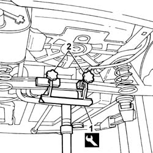
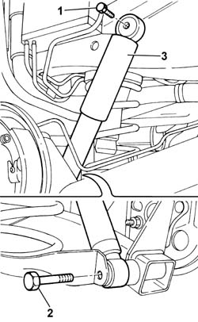
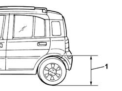

4420A35 rear suspension dampers - r r
- Path
- Procedures > 44 SUSPENSION AND WHEELS > 4420 REAR SUSPENSION > 4420A REAR DAMPERS AND SPRINGS > 4420A35 rear suspension dampers - r r
- Kind
- repair procedure (removal / refitting; the operation number is the code)
- Applies to
- all engines; all production periods
- Interactive page
- https://sloeber94.github.io/elrnDB-fPnd/en/#/2752810
Applies to: all engines; all production periods
 Removing
Removing
 Refitting
RefittingPlace the car on a ramp.
1. Fit the tool for supporting the rear axle on a hydraulic jack
Name | Country | |
|---|---|---|
1 | Mount | 1.870.602.000 |
2. Position the hydraulic jack with appropriate tool in the centre of the rigid rear axle and fix it using the two knobs.
Partly compress the rear suspension.

Applies to: all engines; all production periods
1. Unscrew the upper bolt securing the damper to the body.
2. Unscrew the upper bolt securing the damper to the body.
3. Remove the rear shock absorber.
Repeat the same operation on the remaining shock absorber.

Applies to: all engines; all production periods
Refitting
RemovingCheck the condition of the rear shock absorbers.
Fit the rear shock absorbers.
Screw in the upper bolts securing the shock absorbers to the bodyshell without tightening them to torque.
Screw in the lower bolts securing the shock absorbers to the rear axle without tightening them.
Remove the hydraulic jack complete with tool for supporting the rear suspension axle.
Name | Country | |
|---|---|---|
- | Mount | 1.870.602.000 |
Remove the vehicle from the ramp.
Place the vehicle in the theoretical load conditions in order to torque tighten the bolts tightened previously.
Take the car to a platform bridge so that the wheels can rest on the ground.
Place the vehicle in standard 'A' conditions, i.e. with the spare wheel, tool kit, all fluids and a full tank of fuel. Check that the tyre pressures are correct.
Measurement | Value | ||
|---|---|---|---|
- | Front wheel pressure (bar) | 2 |
Measurement | Value | ||
|---|---|---|---|
- | Rear wheel pressure (bar) | 1.9 |
1. Check that the distance between the rear wing maximum curvature point and the wheel centre is 626 mm.

Applies to: all engines; all production periods
Tighten the bolts fixing the shock absorber to the bodyshell and to the rear axle to torque.
 | Fastening | Component | Ø | Value (daNm) |
|---|---|---|---|---|
- | Bolt | REAR DAMPER | M10 x 1.25 | (Upper) 8 |
| Fastening | Component | Ø | Value (daNm) |
|---|---|---|---|---|
- | Bolt | REAR DAMPER | M12 x 1.25 | (Lower) 7 |